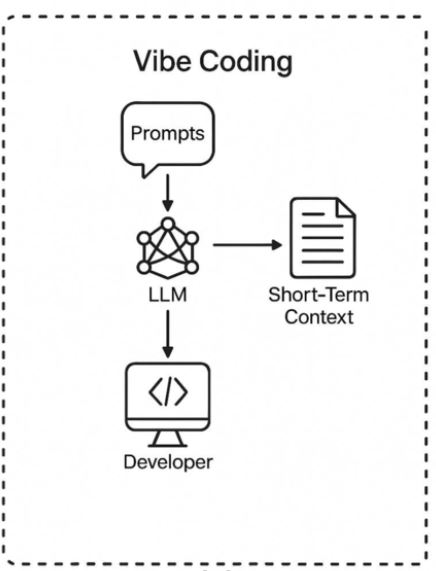

Table of contents |
|---|
| Abstract |
| Introduction |
| Analysis and discussion |
| References |
Karpathy, A introduced the term vibe coding in 2025, describing a transformative software development paradigm in which developers articulate high-level intentions through natural language while AI systems generate executable code.
This transformation redefines programmers as conceptual directors who guide generative AI to produce code rather than manually writing syntax. Advocates highlight significant gains in productivity, creativity, and accessibility, enabling non-technical users to prototype software rapidly.
However, this shift raises concerns about declining code comprehension, rapid technical debt accumulation, and vulnerabilities introduced by unreviewed AI-generated code. Ethical and legal questions regarding responsibility, authorship, accountability, and system integrity further complicate adoption.
Vibe coding is mainly effective in experimenting or the early stages of development. Its success depends on maintaining critical oversight and reliable human–AI collaboration in software creation.
The term “vibe coding” was first coined by the well-respected AI researcher and Computer Scientist Andrej Karpathy in February 2025. He defines it as a new software development paradigm where developers use AI tools and communicate through natural human languages to state their high-level intent rather than writing the computer code (Kitishian, 2025). This marks a revolutionary shift in software development. Rather than using logic and algorithmic thinking, software developers become “conceptual directors”. This means developers become guides articulating program intent, while AI implements it. The key is no longer programming in specific languages but the ability to articulate the required outcome by following the “vibe” and evaluating AI-generated code (Horvat, 2025). Vibe coding provoked significant debate amongst computer scientists. Proponents describe it as a major advancement and an accessible way for software creation, while critics warn that it is “idle programming” (Smith, 2025) (Szymanski, 2025).
A 2025 study on ResearchGate formalised vibe coding as a “software development paradigm in which developers express their intentions about the software product using natural language”, created through a generative model, and formed into executable code (Horvat, 2025). Meske, C. et al. described context as “reconfiguration of intent mediation in software development,” comparing it to earlier developments in coding that advanced programming from machine code (0s and 1s) to human-readable syntax such as MATLAB (Meske et al., 2025). Practically, vibe coding is unfolded by iterative prompting, code execution (running code), and logical refinement. Developers issue feedback on AI-generated code. Examples are “optimise database queries” or “add user authentication,” with AI modifying the existing code autonomously. The emphasis moves from writing code to collaborating with AI through dialogue (Horvat, 2025). Following workflow is used:

(Sapkota, 2025)
Ad hoc software development, logic and manual control are key skills for developers. Vibe coding changes required developer skills, who move from creating code to curating (Pajo, 2025). In their article, Moore & Tatonetti noted that the focus shifts from human syntax mastery to human–AI interaction. (Moore & Tatonetti, 2025) This transition reduces the need for technical knowledge. In addition, non-technical people can now prototype applications through conversational interfaces with AI (Pajo, 2025). Consequently, vibe coding makes programming more accessible to people, allowing previously excluded non-technical people to take part in software creation. However, this abstraction comes with risk. When developers are unaware of how their code operates, debugging and long-term maintenance become increasingly difficult (Horvat, 2025). This gets worse for non-technical people who have no expertise in programming.
[1] Kitishian, D. (2025) Andrej Karpathy Vibe coding - klover.ai, Andrej Karpathy Vibe Coding. Available at: https://www.klover.ai/andrej-karpathy-vibe-coding/ (Accessed: 02 December 2025).
[2] Horvat, M. (2025) What is Vibe Coding and When Should You Use It or Not, ResearchGate Publications. Available at: https://www.klover.ai/andrej-karpathy-vibe-coding/ (Accessed: 27 October 2025).
[3] Smith, M. (2025) Engineers are using AI to code based on Vibes, Engineers Are Using AI to Code Based on Vibes. Available at: https://spectrum.ieee.org/vibe-coding (Accessed: 27 November 2025).
[4] Szymanski, P.F. (2025) The pros and cons of vibe coding, The Rise (and Risk) of Vibe Coding. Available at: https://softwaremind.com/blog/the-rise-and-risk-of-vibe-coding-whats-worth-knowing (Accessed: 26 November 2025).
[5] Meske, C. et al. (2025) Vibe Coding as a reconfiguration of intent mediation in software development: Definition, implications, and research agenda, arXiv.org. Available at: https://arxiv.org/abs/2507.21928 (Accessed: 02 December 2025).
[6] Pajo, P. (2025) (PDF) vibe coding: Revolutionizing software development with AI-Generated Code, Vibe Coding: Revolutionizing Software Development with AI-Generated Code. Available at: https://www.researchgate.net/publication/389848540_Vibe_Coding_Revolutionizing_Software_Development_with_AI-Generated_Code (Accessed: 19 November 2025).
[7] Moore, J.H. and Tatonetti, N. (2025) Vibe coding: A new paradigm for biomedical software development - biodata mining, Vibe coding: a new paradigm for biomedical software development. Available at: https://link.springer.com/article/10.1186/s13040-025-00462-9 (Accessed: 01 December 2025).
[8] What is boilerplate code? (no date) What is Boilerplate Code? Available at: https://aws.amazon.com/what-is/boilerplate-code/ (Accessed: 01 December 2025).
[9] Sabra, A., Schmitt, O. and Tyler, J. (2025) Assessing the quality and security of AI-generated code: A quantitative analysis, Assessing the Quality and Security of AI-Generated Code: A Quantitative Analysis. Available at: https://arxiv.org/abs/2508.14727 (Accessed: 01 December 2025).